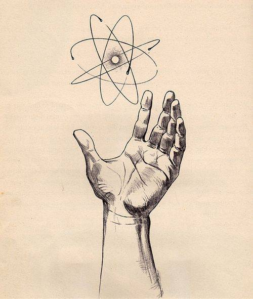
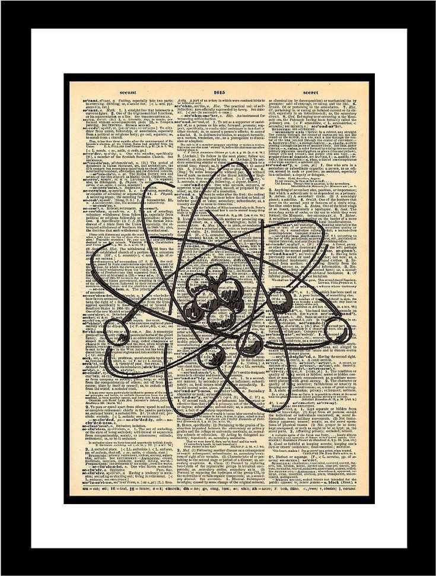
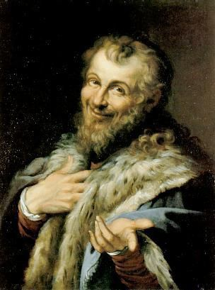
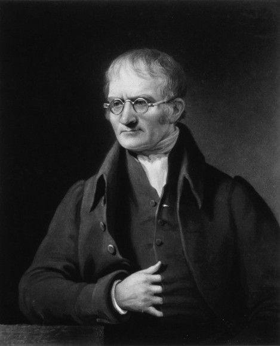
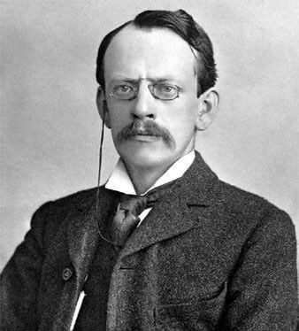

Aliyah Ceelin Arao
Pag mahirap ang life mag "ayeee"

203 likes
In the early 5th century BCE Leucippus and Democritus (460–370 BC) argued that all “matter” was composed of small, finite particles that they called “atomos”, meaning “indivisible”, and the modern word “atom” is derived from this term there is another term for "atoms" which is "atomism" it was rooted in ancient greece that states the universe is made up of indestructible particles known as "atoms". However, these ideas were largely ignored at the time, as most philosophers favored the Aristotelian perspective. Aristotelian's conclusion that “matter” consisted of various combinations of the four “elements”—fire, earth, air, and water—and could be infinitely divided. These philosophers thought about atoms and “elements” as philosophical concepts, but apparently never considered performing experiments to test their ideas.
🖼️: https://pin.it/5XgMtgGAB
✒️: https://uen.pressbooks.pub/introductorychemistry/chapter/history-of-atomic-structure/#:~:text=Early%20History%20of%20the%20Atom,is%20derived%20from%20this%20term.
View all 32 comments
2 hours ago
Jh Ocmer
Prinsesa ng P2

203 likes
The concept of the atom was revisited and elaborated upon by many scientists and philosophers, including Galileo, Newton, Boyle, and Lavoisier (1661). One of them that conducted an experiment is Boyle presented a discussion of atoms in his “The Sceptical Chymist” (1661). However, John Dalton an English chemist and meteorologist credited with the first modern atomic theory (1807). By studying and expanding upon the works of Antoine Lavoisier and Joseph Proust (1803). As explained in his “A New System of Chemical Philosophy” (1804) it is a rule of stoichiometry that the law, which was based on Dalton’s observations of the reactions of atmospheric gases, states that when elements form compounds, the proportions of the elements in those chemical compounds can be expressed in small, whole-number ratios.
Dalton’s experiments (1803) with gases led to some of the earliest measurements of atomic masses and a concept of atomic structure and reactivity. Dalton’s statement (1803) in his atomic theory that all atoms of a given element are identical, The atoms of different elements vary in mass and size, Atoms are indestructible, Chemical reactions may result in their rearrangement but not their creation or destruction.
🖼️: https://pin.it/1wXhmCN35
✒️: https://chem.libretexts.org/Courses/Oregon_Institute_of_Technology/OIT%3A_CHE_101_-_Introduction_to_General_Chemistry/02%3A_Atoms_and_the_Periodic_Table/2.01%3A_Evolution_of_Atomic_Theory
View all 52 comments
6 hours ago
John Andrei Piad
Love love love..

203 likes
Democritus’ Idea Of Atom
Around 400 BC, a Greek philosopher named Democritus came up with a theory that everything in the world was made of tiny indestructible particles called “atomos”, which means “uncuttable”. He believed that the properties of materials depended on the type of atomos they were made of. For example, sour or sharp-tasting things were made of particles with pointy edges, sweet stuff was made of more rounded and smooth atoms, while metals were made of hard atoms. Apart from this shape misinterpretation, Democritus was pretty much on the right track concerning atomic composition dictating the property of a substance. However, this theory was largely discredited by Aristotle, the original social influencer, who believed that everything on the planet was made of four elements: earth, fire, water, and air.
🖼️: https://pin.it/1bRNhaUFk
✒️: https://www.scienceabc.com/pure-sciences/how-has-the-atomic-model-evolved-over-the-years.html
View all 32 comments
2 hours ago
Mariben Pesimo
Ilaw sa Daan

203 likes
The next stop in the ever-changing atomic theory came almost 2,000 years later, from a British chemist and meteorology enthusiast named John Dalton. He conducted experiments where he mixed two gases and observed their behavior. Most of the gases he tested existed independently without being bothered by the presence of the other. However, he found something different when nitric oxide was allowed to interact with atmospheric oxygen. 36 measures of pure nitrous gas reacted with 100 measures of air to give 80 measures of a new gas that was neither nitrous nor oxygenous.
This piqued his curiosity, so he conducted the same experiment with different volumes of gas. He observed that the gases reacted with each other only in a fixed ratio, which gave rise to the law of multiple proportions and the theory of atomism.
Dalton theorized that everything in this world was composed of atoms—tiny indestructible solid spheres that were unique for every element. Atoms of different elements combine to form different compounds and were rearranged during chemical reactions. Even after 200 years, some of this concept remains true.
🖼️: https://pin.it/5rqYVMhb9
✒️: https://www.scienceabc.com/pure-sciences/how-has-the-atomic-model-evolved-over-the-years.html
View all 32 comments
2 hours ago
Aliyah Ceelin Arao
Pag mahirap ang life mag "ayeee"

203 likes
Thompson Plum Pudding Model
Until the late 19th century, atoms were pictured as indivisible particles; the first person to break this notion was the English physicist J.J Thompson and his trusty cathode ray tube. Inside a glass tube vacuum, a visible beam of particles or cathode rays was generated by applying high voltage across metal electrodes. The stream of particles produced from the metal deflected away from the negative charge and tended towards the positive charge.
After repeating this experiment several times with other metals, he came up with the first atomic model. His famous plum pudding model described an atom as a particle made of a positively charged mass (the pudding) with tiny negative charges embedded in it (like plums).
🖼️: https://pin.it/5x2gDBy4q
✒️: https://www.scienceabc.com/pure-sciences/how-has-the-atomic-model-evolved-over-the-years.html
View all 32 comments
2 hours ago
Aliyah Ceelin Arao
Pag mahirap ang life mag "ayeee"
203 likes
Rutherford’s Nuclear Model Of Atoms
After some initial resistance, this model became quite popular in the scientific world, yet New Zealand-born Ernest Rutherford was not convinced. In the early 1900s, radioactivity was all the rage, and Rutherford discovered alpha, beta, and gamma rays during his work on radioactive decay. He wanted to develop a method to produce alpha particles and use that to probe into the structure of an atom.
He did what every physicist at the time did—he came up with an experiment. The gold-foil experiment, also known as a Geiger–Marsden experiment, consisted of a thin sheet of gold foil with a circular Zinc Sulfide-coated screen behind it that would flash every time an alpha particle hit it. Rutherford expected the particles to bullet through the foil and hit the screen behind it. While most of the particles did behave as expected, some were deflected at an angle greater than 90 degrees. Backed by his observations, he came up with a new atomic model that disproved the previous one. He proposed an atomic structure where most of the atom’s mass was concentrated in a positively charged center (which he later named the nucleus, Latin for “nut”), around which the electrons orbited like planets around the sun.
🖼️: https://pin.it/4NWvO91KW
✒️: https://www.scienceabc.com/pure-sciences/how-has-the-atomic-model-evolved-over-the-years.html
View all 32 comments
2 hours ago
Aliyah Ceelin Arao
Pag mahirap ang life mag "ayeee"
203 likes
Bohr’s Model Of Atoms
A year after the publication of Rutherford’s atomic theory, Niels Bohr found a discrepancy in the model. If electrons were to orbit around a positively charged center, at some point, those electrons would lose their energy and collapse into the nucleus, making the atoms unstable. However, that wasn’t the case, as most atoms proved to be pretty stable (other than the radioactive ones).
This is where quantum physics came into the picture. Bohr used the concept of quantized energy to propose that electrons moved around the nucleus in fixed orbits or shells. The shells closer to the nucleus have lower energy, and the one farthest away has the highest. If an electron jumps to a lower energy orbit, it gives out the extra energy in the form of radiation, thereby maintaining atomic stability.
Even though Bohr’s model doesn’t hold true for complex multi-electron systems, this model is still the most popular representation of atomic structure in most textbooks.
🖼️: https://pin.it/5XgMtgGAB
✒️: https://uen.pressbooks.pub/introductorychemistry/chapter/history-of-atomic-structure/#:~:text=Early%20History%20of%20the%20Atom,is%20derived%20from%20this%20term.